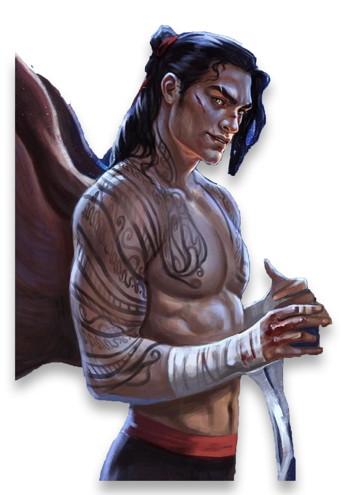
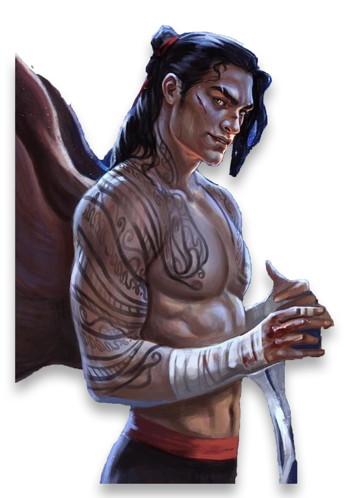
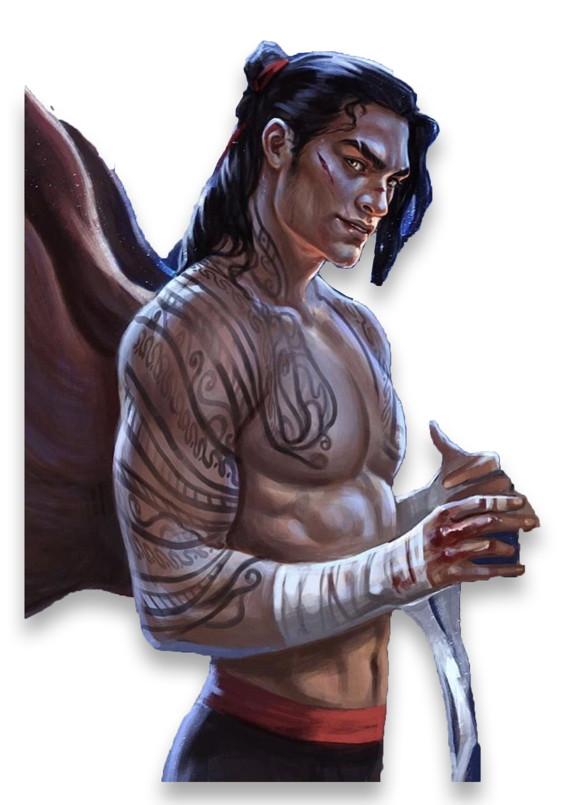
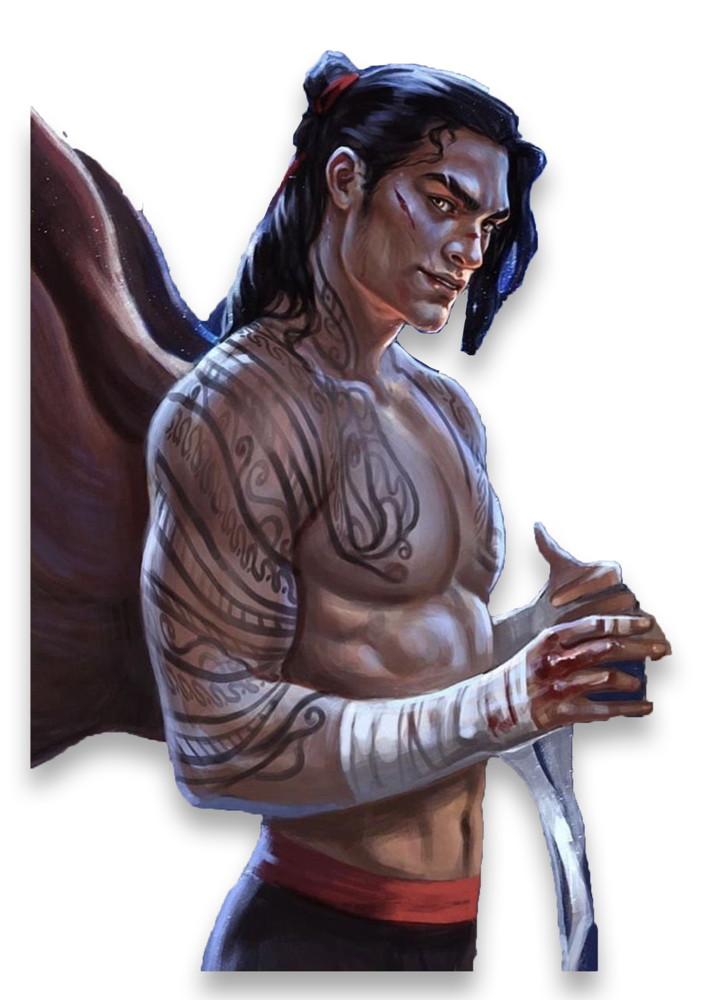

The Ilyrian Mountains are a mountain range of Illyria located north in the Night Court. The Illyrian warriors have war camps in the mountains where Cassian trains them.
Windhaven is the main war camp run by Devon. It's is described as a cold and harsh Illyrian war-camp built near the top of a forested mountain. It is built using bare rock and mud, interrupted only by crude, easy-to-pack tents centered around large fire pits.
Although he, as an Illyrian bastard, was expected to be a bottom-ranked soldier forever, Cassian's strength and power took him to the top of the ranks as a General Commander of the Night Court's armies and into Rhysand's Inner Circle, once Rhysand became the High Lord of the Night Court.